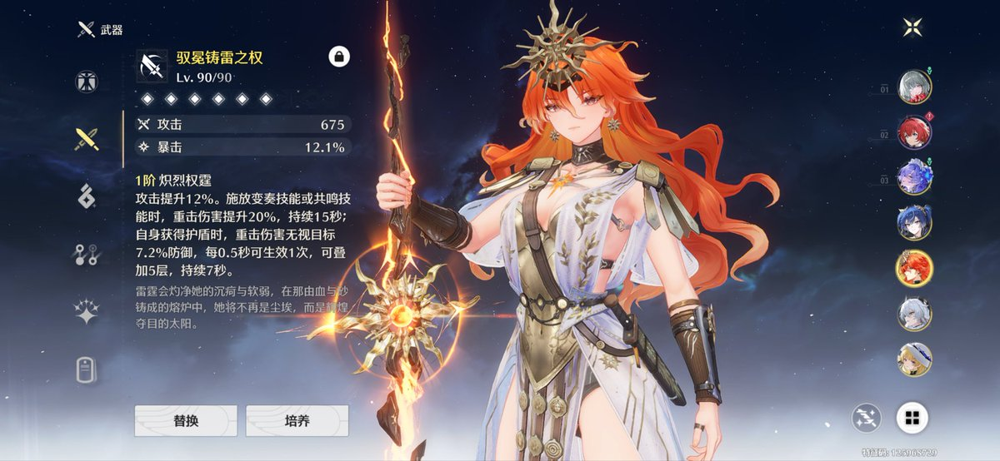
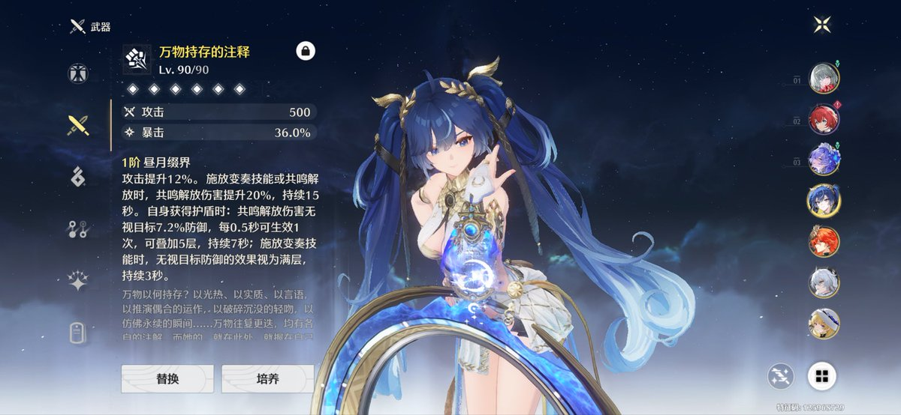

我完蛋了，千咲太萌了，而且2.8就会出，我最多能休息一个大版本了，如果2.7还有我很想要的复刻那又休息不了了。
我喜欢鸣潮设计的红/黑/白色系的可爱少女，从椿开始，尤其是长直发的弗洛洛和千咲，忍不了了，再累我也要抽了……

我喜欢鸣潮设计的红/黑/白色系的可爱少女，从椿开始，尤其是长直发的弗洛洛和千咲，忍不了了，再累我也要抽了……


长出一口气……
这个大版本熬到最后几天终于也是功德圆满了，原本想要养生的但我真的觉得日月组很好以及真的没有雷队，活生生硬充+锄大地肝出来了两个0+1，刚才终于抽到尤诺的这把武器的时候意识到音动效是金色武器人都平缓了，直接养满。
而且工作日都没空玩，也累，上线清体力就走，到周末逼自己锄。 https://t.co/kVOQRxr7Lf
这个大版本熬到最后几天终于也是功德圆满了，原本想要养生的但我真的觉得日月组很好以及真的没有雷队，活生生硬充+锄大地肝出来了两个0+1，刚才终于抽到尤诺的这把武器的时候意识到音动效是金色武器人都平缓了，直接养满。
而且工作日都没空玩，也累，上线清体力就走，到周末逼自己锄。 https://t.co/kVOQRxr7Lf